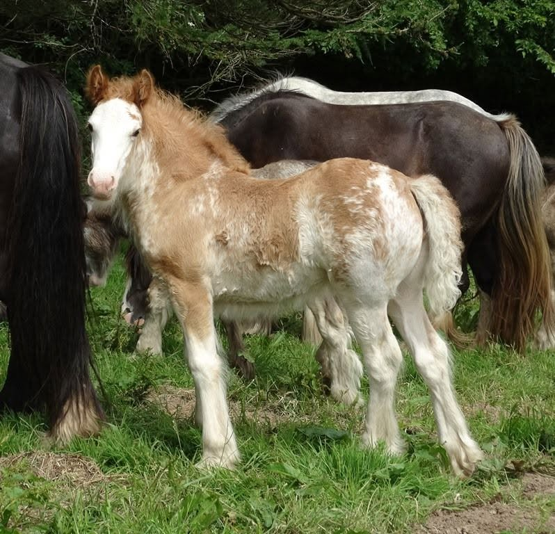
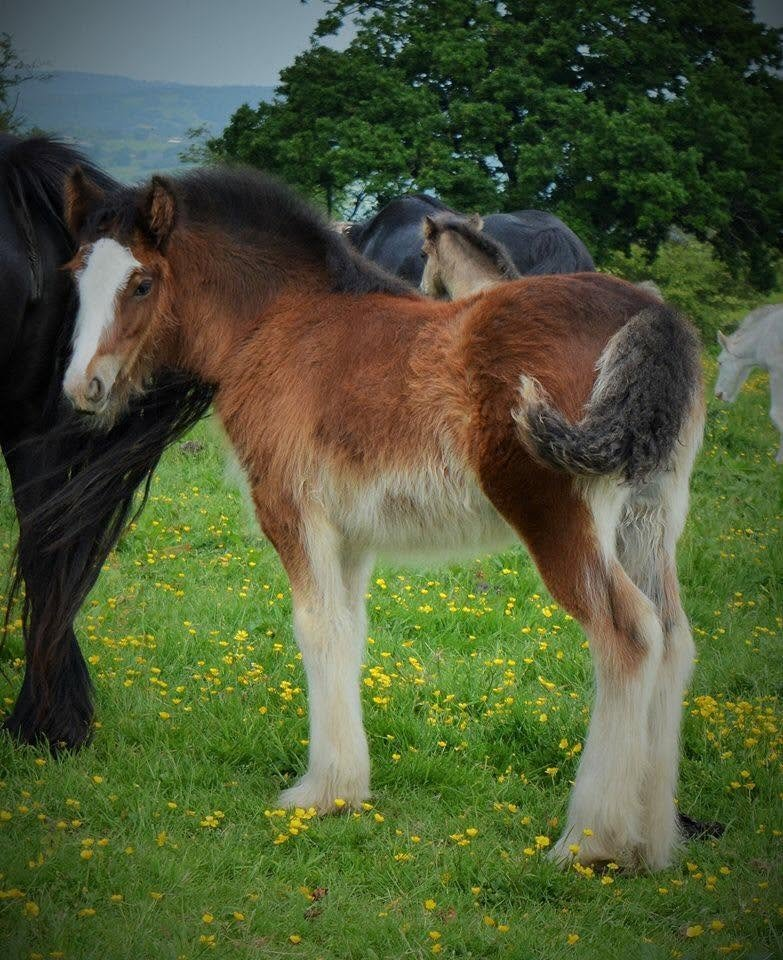
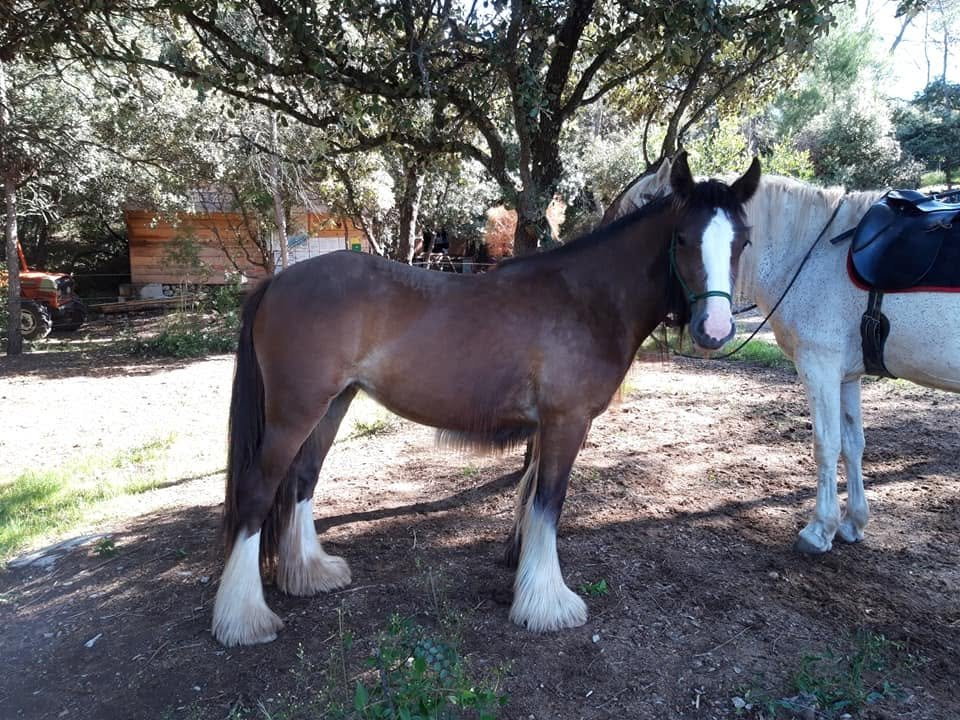
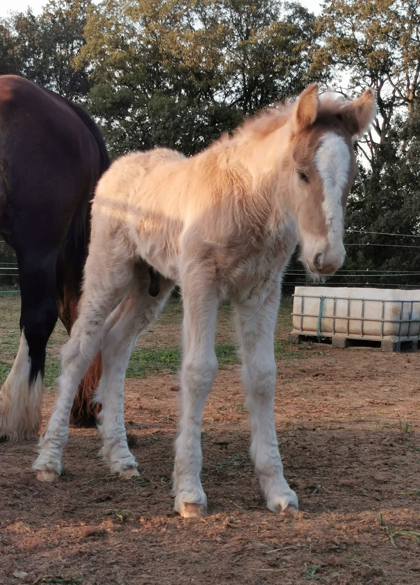
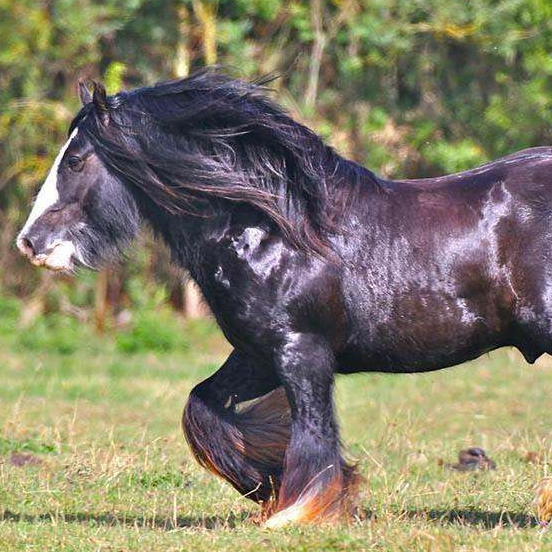
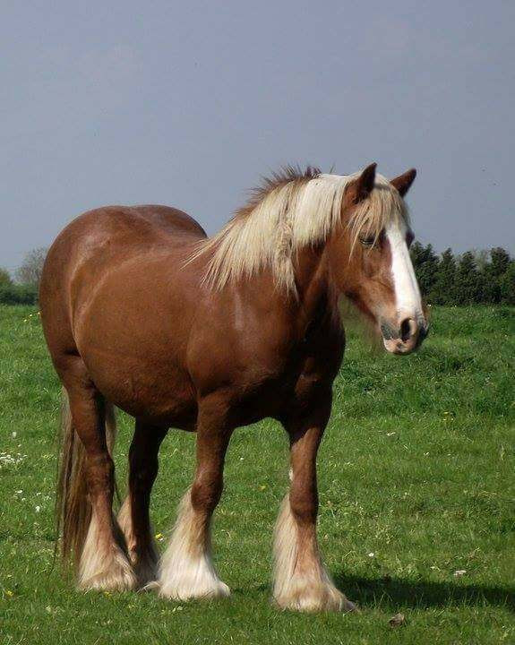

Vendue par SD 7SD One Stop The Top
Exportée aux USA, actuellement à la vente suitée. Elle est devenue une magnifique jument et une très bonne mère.
Voir les 7 photosBientôt à la retraite


SD Suzie est la matriarche de l'élevage. Fille du célèbre Woolly Mammoth, étalon que j'admire depuis des années, elle entre dans ma vie grâce à l'amitié nouée avec Janey Down, qui me la confie après plusieurs années d'échanges.
Peu après le décès de ma grand-mère, pilier de notre famille, tel un arbre dont les racines, les branches et l'ombre bienveillante rassemblaient plusieurs générations; j'accepte d'accueillir cette jument alors pleine de Flash Harry. Je ne mesure pas encore à quel point cette décision marquera l'avenir de Humming Cob. Nait alors Sakura, au Pays de Galles. Son nom, le cerisier japonais, s'impose comme une évidence et devient l'un des symboles de l'élevage. Depuis, cet arbre de transmission continue de grandir à travers les générations nées de Suzie.
Débourrée montée, volontaire en extérieur et dotée d'une belle énergie, elle transmet son caractère à sa descendance. Plus qu'une poulinière, elle est l'une des fondations de l'identité de Humming Cob.
9 poulains sont nés, issus de trois pères. Cliquez sur les cartes pour voir les photos.
Du Pays de Galles aux États-Unis

Vendue par SD 7Exportée aux USA, actuellement à la vente suitée. Elle est devenue une magnifique jument et une très bonne mère.
Voir les 7 photos
Vendue par SD 8La grande sœur de mes filles. Celle qui a fait naître mon admiration pour cette lignée et qui, sans le savoir, a ouvert la porte à l'arrivée de Suzie.
Voir les 8 photosDu Pays de Galles à Humming Cob
 ★ Élite grade 1
★ Élite grade 1
Actuellement en confiage chez mon amie Ludivine du Cros de L'Oume, elle s'épanouit au rythme de randonnées actives.
Voir la fiche
★ Élite grade 1Également en confiage, chez mon amie Julie Berenguer, elle participe à de l'équicie et est maman de nouveau.
Voir la fiche Vendue
Vendue
Du bleu dans les yeux, du tempérament, elle est la première pouliche à porter notre affixe (HC). Elle poursuit son aventure à deux pas de l'élevage.
Voir la fiche Vendu par DC
8
Vendu par DC
8
Né chez Éloïse Richard, de l'union avec son étalon Kuarahy. Curieux, intelligent et débrouillard, Nuran allie indépendance et affection.
Voir les 8 photos
Reste à l'élevageIntelligent, réfléchi, polyvalent. De robe Grullo Silver, rare dans la race. Taille estimée ~1m50 (toisé à 1m46 déjà). Super caractère avec l'humain. Il pourra aisément évoluer en TREC, en randonnée ou devenir étalon.
Voir la ficheSD Suzie descend de SD Woolly Mammoth, l'un des étalons emblématiques de Steve Down (SD Farm). Exporté aux États-Unis, il devient l'un des piliers fondateurs du Gypsy Vanner. Il est lui-même issu de Samson of Wales et de Sovereign, deux noms emblématiques de la race.

PèreSD Woolly Mammoth
MèreSD Olivia